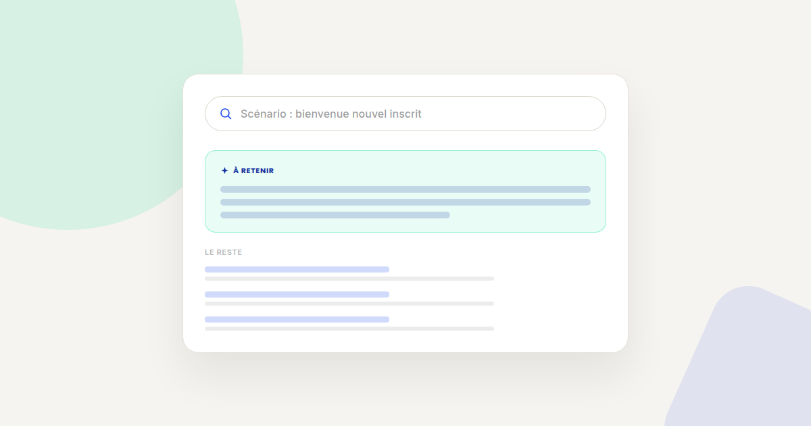
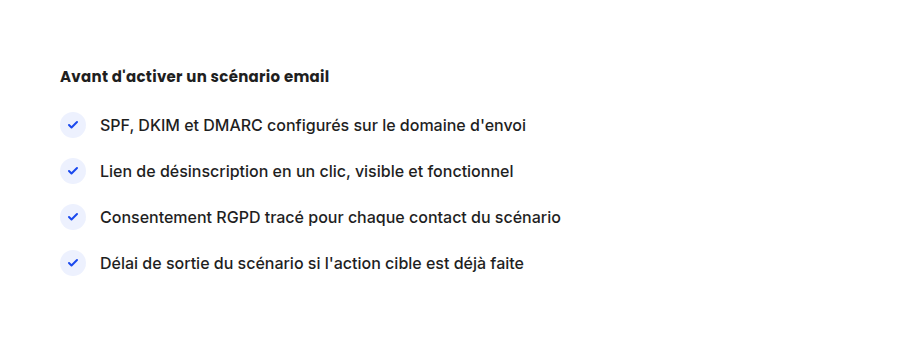

Email marketing et lifecycle automation : la checklist avant de lancer un scénario
L'email marketing reste l'un des canaux au meilleur ROI en growth marketing — à condition d'éviter les erreurs qui l'empêchent d'arriver en boîte de réception. Voici la checklist que je fais valider avant chaque lancement de scénario automatisé.

Un scénario de lifecycle marketing mal préparé ne se contente pas de sous-performer : il peut dégrader la délivrabilité de tout votre domaine d'envoi, pour des mois. Voici les points à vérifier avant de l'activer, classés par risque.
Technique : ce qui conditionne l'arrivée en boîte de réception
- SPF, DKIM et DMARC configurés et alignés. Depuis 2024, Google et Yahoo exigent ces trois protocoles pour tout envoi en volume vers leurs boîtes — sans eux, vos emails partent directement en spam ou sont rejetés, quelle que soit la qualité du contenu.
- Une désinscription en un clic, respectée sous 48h. C'est désormais une exigence technique des grands fournisseurs de messagerie, pas seulement une bonne pratique : un scénario qui continue d'envoyer après une désinscription fait grimper le taux de plainte, qui dégrade la réputation de tout le domaine.
- Un domaine d'envoi dédié, distinct du domaine principal. Séparer l'envoi transactionnel (facture, confirmation) de l'envoi marketing protège la délivrabilité de l'un si l'autre subit une dégradation de réputation.
- Un taux de plainte surveillé en continu. Au-delà de 0,3 % de plaintes, les grands fournisseurs commencent à filtrer systématiquement les envois du domaine — un seuil qui se dépasse vite avec un scénario mal ciblé.

Éditorial : ce qui évite le scénario qui tourne à vide
- Une condition de sortie explicite. Si le contact a déjà réalisé l'action visée par le scénario (achat, rendez-vous pris) pendant qu'il le traverse, il doit en sortir automatiquement — sinon il reçoit des relances pour une action déjà faite, ce qui use la relation plus vite qu'il ne la construit.
- Un seul objectif par scénario. Un scénario qui tente de vendre, fidéliser et réactiver en même temps ne fait bien aucune des trois — chaque email doit avoir un objectif de conversion unique et mesurable.
- Un espacement qui laisse le temps de réagir. Trois emails en 24h pour un scénario de bienvenue épuisent l'attention avant même que le contact ait eu le temps de s'engager avec le premier.
Mesure : ce qu'il faut suivre après le lancement
- Le taux d'ouverture n'est plus fiable seul depuis la protection de confidentialité des emails d'Apple Mail, qui précharge les pixels de tracking. Privilégiez le taux de clic et le taux de conversion sur l'action visée.
- Le taux de désabonnement par email du scénario, pas seulement sur l'ensemble : un email précis qui génère un pic de désabonnements signale un problème de contenu ou de timing sur cet email en particulier.
- Le délai moyen avant conversion, pour savoir si la longueur du scénario est adaptée ou si la conversion arrive bien avant sa fin — et donc que le scénario peut être raccourci.
FAQ
Faut-il un outil spécifique pour respecter SPF, DKIM et DMARC ?
La plupart des plateformes d'emailing et de marketing automation modernes les configurent en grande partie automatiquement, mais la validation finale (enregistrements DNS) reste à la charge du propriétaire du domaine.
Combien d'emails maximum dans un scénario de bienvenue ?
Il n'y a pas de nombre universel, mais 3 à 5 emails espacés sur une à deux semaines couvrent la plupart des cas sans épuiser l'attention du contact.
Le RGPD impose-t-il une durée de conservation des contacts inactifs ?
Oui, la CNIL recommande une purge des contacts n'ayant pas interagi depuis 3 ans, sauf relation commerciale active — au-delà, la conservation du contact devient difficile à justifier.
Un scénario email qui ne convertit pas comme prévu ?
Pour aller plus loin, voir la page CRO, la page Analytics, et la page Outils.
À lire aussi : Growth loops vs funnel marketing classique : repenser l'acquisition.
Pour continuer sur ce sujet.